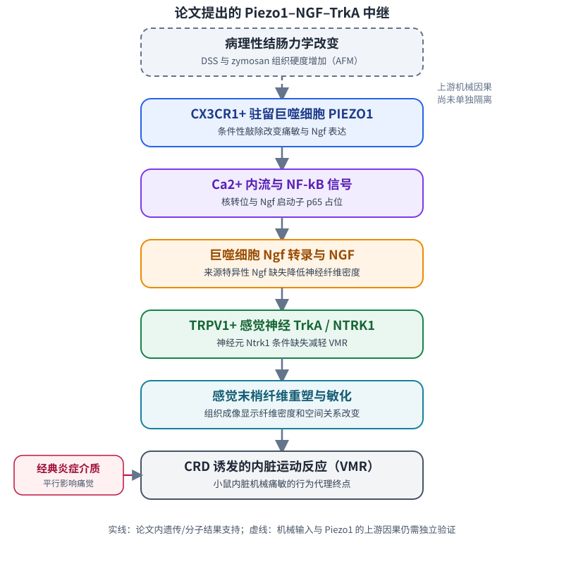
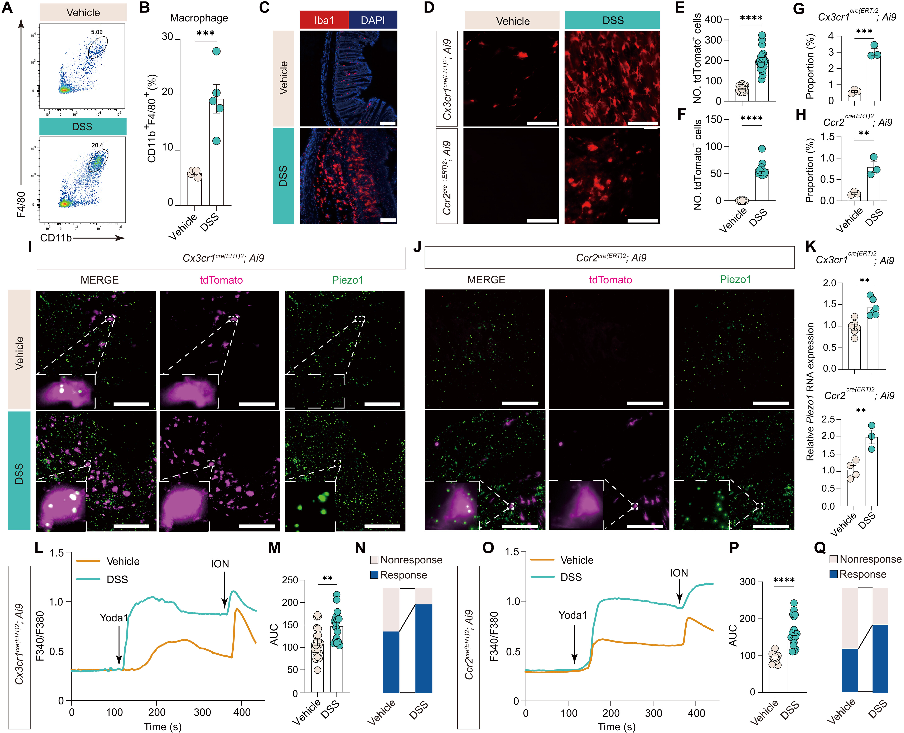
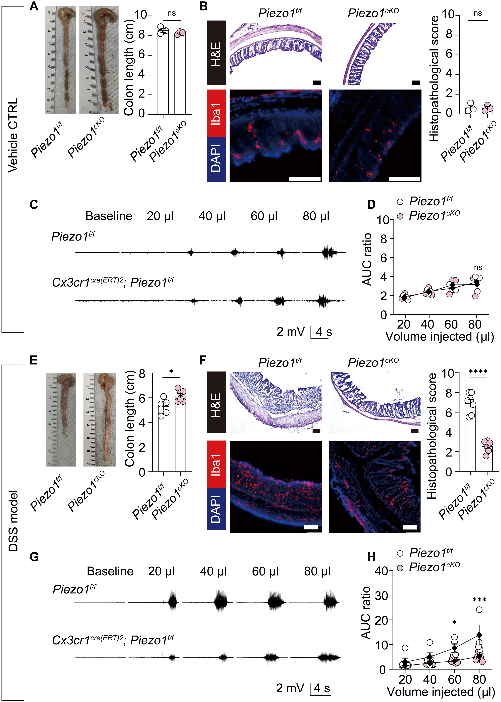
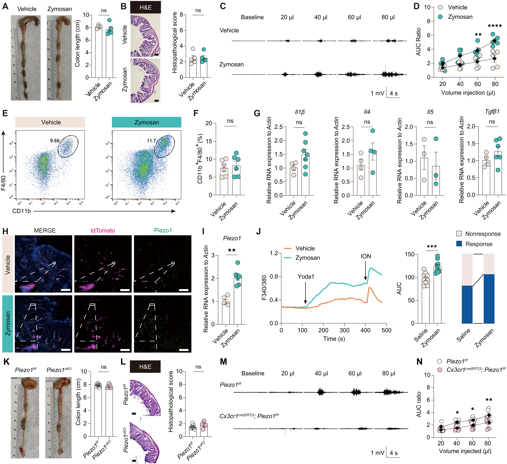
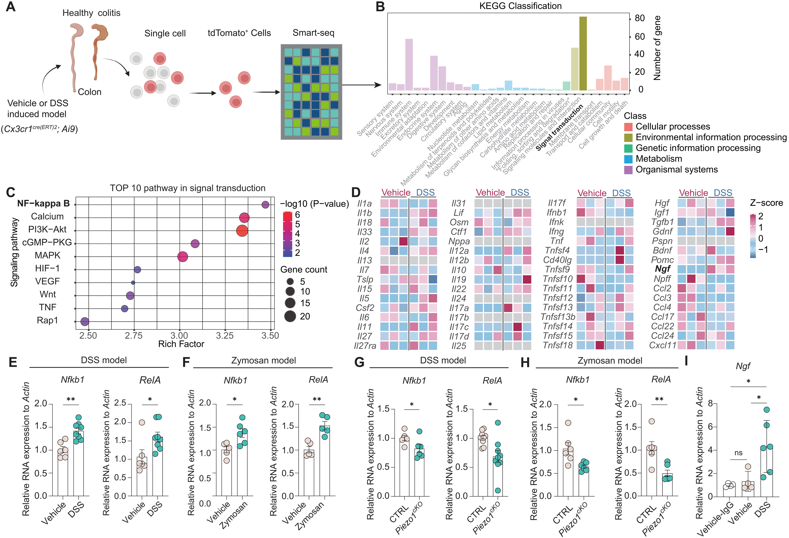
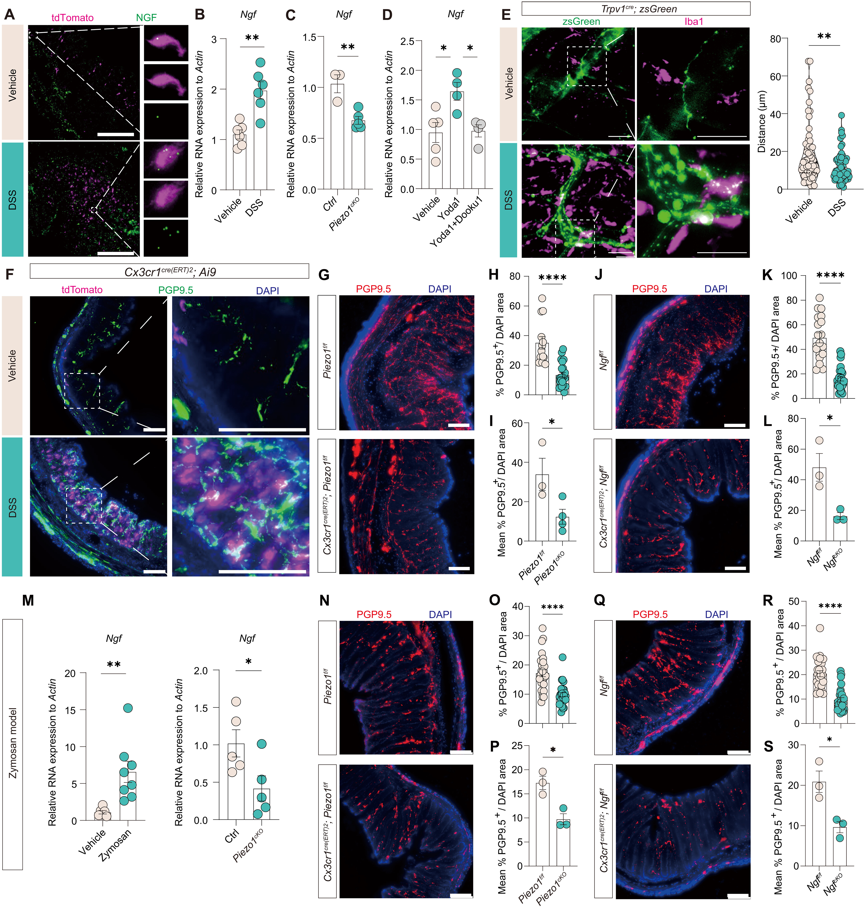
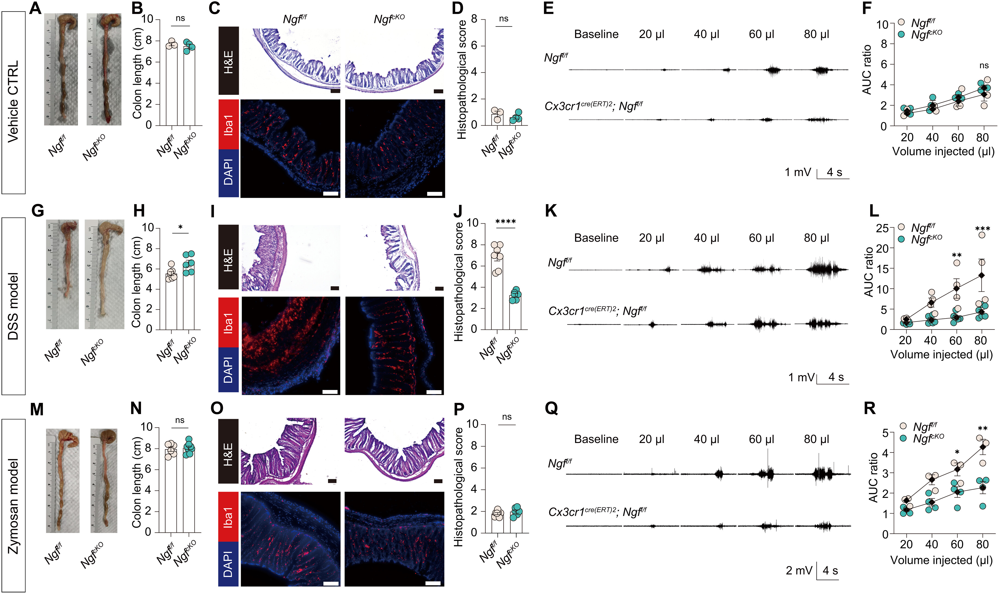
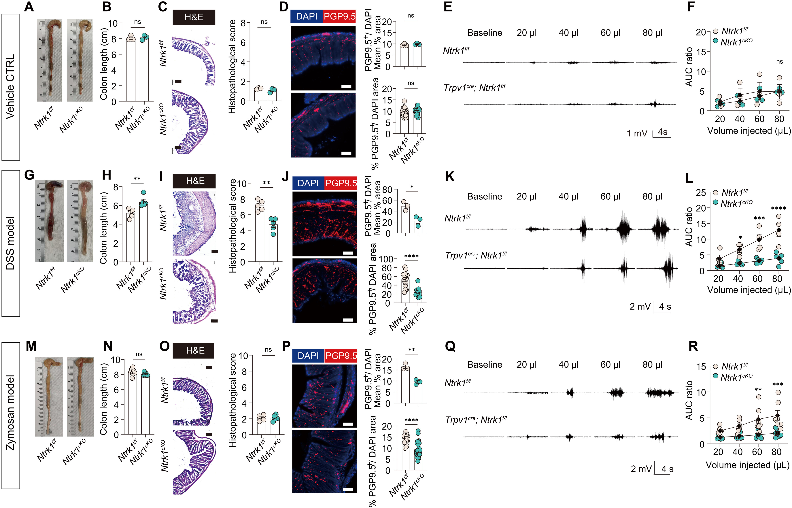

提示阅读版：打开 HTML 阅读版
中文逐图精读；重点拆解机械信号、巨噬细胞和伤害感受器之间的因果证据及其对神经—内皮—瘢痕研究的可迁移假设。
📄 1. PAPER INFO#
| 项目 | 内容 |
|---|---|
| 中文标题 | 巨噬细胞—伤害感受器机械感受中继驱动慢性内脏痛 |
| 英文标题 | An autonomous macrophage-nociceptor mechanosensory relay drives chronic visceral pain |
| 期刊/年份 | Science Immunology, 2026；在线发表 2026-10-23 |
| DOI | 10.1126/sciimmunol.aeb3809 |
| 作者 | Liyan Wu、Tianyi Shen、Zihan Wang 等 |
| 研究类型 | 小鼠机制研究；结合公开单细胞数据重分析、条件遗传扰动和药理学验证 |
| 原文 | Science Immunology |
| 作者代码 | 本轮未核实到独立代码仓库 |
| 分析状态 | 已按主图和可访问图注精读；补充 PDF 未能直接取得；未复现 |
🔎 2. 本文看点#
- 问题切口： 内脏痛通常被解释为炎症介质使神经末梢敏化；作者追问组织力学改变能否被巨噬细胞直接感知，并形成一条平行于典型细胞因子级联的痛觉通路。
- 机制主线： 结肠 CX3CR1⁺ 驻留巨噬细胞中的 Piezo1 与 Ca²⁺/NF-κB 信号相连，诱导 Ngf；巨噬细胞 NGF 作用于 TRPV1⁺ 感觉神经上的 TrkA/NTRK1，伴随神经纤维重塑和内脏机械痛敏。
- 最强证据： 不只依赖表达或细胞通讯推断；作者分别敲除巨噬细胞 Piezo1、巨噬细胞 Ngf、TRPV1⁺ 神经元 Ntrk1，并在 DSS 与 zymosan 模型中观察行为表型。NF-κB 对 Ngf 启动子的占位还由 CUT&Tag-qPCR 检查。
- 关键限制： 证据来自小鼠结肠模型；zymosan 模型支持“没有明显活动性黏膜炎症时仍可有痛敏”，但不等于排除了所有低度炎症。组织硬度增加也还没有通过独立改变基质硬度证明是唯一的 Piezo1 上游触发因素。[^1]
🧭 3. 研究概述#
科学问题#
在结肠疾病中，组织炎症、基质力学改变和感觉神经敏化往往同时发生。作者要区分两种可能：巨噬细胞只是在炎症后被动响应；或巨噬细胞本身能感受机械变化，再把信号传递给伤害感受器。
作者主张#
作者提出一条局部神经免疫中继：
病理性组织力学环境 → CX3CR1⁺ 驻留巨噬细胞 Piezo1 → Ca²⁺/NF-κB → Ngf/NGF → TRPV1⁺ 神经元 TrkA/NTRK1 → 神经末梢结构与反应性改变 → 结直肠扩张诱发的内脏痛敏。[^1]
证据预警#
- 较强结论： 在所用小鼠模型内，巨噬细胞 Piezo1/Ngf 和 TRPV1⁺ 神经元 Ntrk1 的遗传干预会改变内脏痛敏；Piezo1–NF-κB–Ngf 关系还获得启动子占位证据。
- 谨慎结论： 结果支持一种与明显炎症反应部分分离的神经免疫机械感受通路。
- 不能直接推出： 人类 IBD 患者的腹痛由该通路主导；瘢痕组织也存在相同回路；组织硬度是唯一机械输入；或任何单细胞表达/空间邻近都已证明真实受力、蛋白分泌和功能接触。
- “慢性”的时间边界： 主文可核实的主要诱导/测试窗口为 DSS 7 天和 zymosan 3 天。标题将结果置于慢性内脏痛框架中，但这些短期窗口本身不能证明疼痛在更长期的自然病程中持续多久。
🗺️ 4. ROADMAP#

*图：实线概括论文内遗传/分子证据支持的中继；虚线表示具体机械输入尚未被独立操纵。[^1]*可编辑的 Mermaid 流程源
flowchart LR
accTitle: 巨噬细胞到伤害感受器的中继
accDescr: 论文提出结肠机械环境经驻留巨噬细胞 Piezo1 和 NGF-TrkA 传递到 TRPV1 阳性感觉神经，并与炎症介质通路并行。
mechanics["结肠病理性力学改变"] --> piezo1["CX3CR1+ 驻留巨噬细胞 Piezo1"]
piezo1 --> calcium["Ca2+ 与 NF-kB 信号"]
calcium --> ngf["Ngf 转录与 NGF"]
ngf --> trka["TRPV1+ 神经元 TrkA / NTRK1"]
trka --> remodeling["感觉纤维重塑与敏化"]
remodeling --> vmr["CRD 诱发的 VMR"]
cytokines["经典炎症介质"] --> vmr
mechanics -. "上游因果尚未单独隔离" .-> piezo1
图中从 Piezo1 到 Ngf、再到 TRPV1⁺/TrkA⁺ 神经的箭头获得遗传或分子实验支持；“基质硬度是唯一上游刺激”及每个神经末梢的直接受力过程仍未被单独证明。CRD 是结直肠扩张测试，VMR 是小鼠内脏运动反应。[^1]
🧫 5. 数据与证据清单#
| 数据/实验 | 类型与样本 | 统计单位 | 论文用途 | 公开状态与风险 |
|---|---|---|---|---|
| 人溃疡性结肠炎与 DSS 小鼠公开单细胞数据 | 公开 scRNA-seq 重分析 | 原队列供体/动物；本文可访问文本未提供完整队列 n | Figure 1 的免疫群体与巨噬细胞变化背景 | 原文补充材料/数据文件 S1 需用于找回 accession 与样本设计 |
| DSS 结肠模型 | 小鼠，2.5% DSS，7 天 | 主图各实验约 3–7 只/组；依 panel 而变 | 炎症背景下 Piezo1、NGF 与痛敏机制 | 小样本；疼痛和炎症同时改变，难单独拆分两者 |
| 结肠内 zymosan 模型 | 小鼠，3 天；未见明显黏膜病理改变 | 主图各实验约 3–9 只/组；依 panel 而变 | 检查明显炎症减轻时 Piezo1–NGF 通路是否仍与痛敏相关 | “无明显炎症”不等于无任何免疫信号；所测炎症指标和时间点有限 |
| Piezo1/Ngf 条件性敲除 | Cx3cr1-CreERT2; Piezo1^f/f 或 Ngf^f/f | 小鼠 | 检查驻留巨噬细胞来源的遗传必要性 | 驱动子限定的是 CX3CR1⁺ 细胞范围；需结合作者的重组和细胞定位验证解释 |
| Ntrk1 条件性敲除 | Trpv1-Cre; Ntrk1^f/f | 小鼠 | 检查 TRPV1⁺ 感觉神经上的 TrkA 必要性 | 结论限于所用驱动子、模型与行为终点 |
| DRG 单细胞数据 GSE329447 | Vehicle 与 DSS 小鼠 DRG；10x 单细胞矩阵 | 2 个 GSM 条目，每条件 1 个；每条目含几只动物/是否混样未说明 | 论文 Figure 7 / Supplementary Figure 11 的疾病状态神经转录变化 | GEO Series 的 overall design 写“bulk RNA-seq”，但 GSM 记录明确写 10x 单细胞、Cell Ranger/Seurat 和矩阵文件；应以样本文件与原文补充说明继续核实，不应假设有动物层级重复。[^2][^3][^4] |
| 结肠 AFM 力学图谱、Olink 与流式 | 小鼠组织力学、蛋白及免疫表型 | 动物或组织样本；部分 n 在补图 | 支持两种模型的组织力学与炎症比较 | 主要信息在 Supplementary Figures S5–S6；本轮未取得补充 PDF 完整图注 |
统计单位提醒： Figure 1 的组织视野、钙成像“unit”和 Figure 5 的细胞—神经距离并不等于独立动物数。例如 Figure 1 有每组 8–20 个视野但来自 3–4 只小鼠；钙成像的 unit 定义为玻片制备。Figure 5 的 60 个距离测量来自每组 3 只小鼠，因此生物学重复仍是 3 只小鼠，而不是 60 个独立样本。[^1]
🔬 6. Figure/Result 逐图分析#
Figure 1｜Piezo1 在结肠巨噬细胞亚群中表达并具有功能#

Figure 1 原图。来源：Wu et al., Science Immunology 2026；出版社 large 版，点击可在 HTML 中查看原尺寸。
研究目标
先确定结肠炎时哪些免疫细胞及巨噬细胞亚群发生变化，再检查驻留 CX3CR1⁺ 与浸润 CCR2⁺ 巨噬细胞是否表达且能响应 Piezo1 激动剂。
方法与目的
| 材料/对象 | 方法 | 目的 |
|---|---|---|
| 人 UC 与 DSS 小鼠公开免疫单细胞数据 | 重分析细胞组成变化 | 确认巨噬细胞是否是结肠炎中扩张突出的免疫群体 |
| DSS 小鼠结肠 | 流式、Iba1 免疫荧光、whole-mount 成像 | 量化巨噬细胞及 CX3CR1⁺/CCR2⁺ 亚群 |
| 结肠组织和分选巨噬细胞 | RNAscope、qRT-PCR | 定位并比较 Piezo1 表达 |
| 分选巨噬细胞 | Yoda1 诱导的 Ca²⁺ 成像 | 判断通道是否具有可测功能响应 |
为什么进行这个分析？
只有先显示候选机械通道在相关细胞群中存在且可被功能激活，后续条件敲除的疼痛效应才有细胞和分子基础。
关键发现
- A–C： DSS 后 CD45⁺CD11b⁺F4/80⁺ 结肠巨噬细胞增加，Iba1⁺ 细胞在组织中增多；流式 A/B 的 n 为每组 5 只小鼠。
- D–F： whole-mount 观察 CX3CR1⁺ 与 CCR2⁺ 巨噬细胞；每组 8–20 个视野来自 3–4 只小鼠，视野不能视作独立动物。
- G–K： 流式、RNAscope 和分选细胞 qRT-PCR 显示两类巨噬细胞及其 Piezo1 转录变化；部分定量 n 为每组 3–6 只小鼠。
- L–Q： Yoda1 可诱导两类细胞 Ca²⁺ 响应；钙成像报告的是玻片制备 unit（CX3CR1⁺：vehicle 21、DSS 16；CCR2⁺：vehicle 11、DSS 17），不等于动物 n。[^1]
逻辑解读
Figure 1 确立“巨噬细胞含有功能性 Piezo1”这一候选起点；它本身还不能说明 Piezo1 是否是疼痛必需因子。
证据边界
- 公开人 UC 数据提供疾病背景，但未在此图中建立人类腹痛指标与该通路的关系。
- 视野、细胞和玻片制备是嵌套观测；独立统计仍应回到动物/供体。
- 表达与激动剂诱发 Ca²⁺ 变化不能单独证明体内受到的机械刺激种类或来源。
Figure 1 一句话
结肠炎相关巨噬细胞表达并响应 Piezo1，为条件遗传扰动提供了候选细胞基础。
Figure 2｜CX3CR1⁺ 细胞中的 Piezo1 参与 DSS 相关内脏痛敏#

Figure 2 原图。来源：Wu et al., Science Immunology 2026；出版社 large 版，点击可在 HTML 中查看原尺寸。
研究目标
用 CX3CR1-CreERT2 条件性 Piezo1 缺失，检验该细胞群 Piezo1 对基线生理和 DSS 诱导疼痛的作用。
方法与目的
| 材料/对象 | 方法 | 目的 |
|---|---|---|
| 健康 Piezo1^f/f 与 Cx3cr1-CreERT2;Piezo1^f/f 小鼠 | 结肠形态、组织学、CRD-VMR | 排除明显的基础生理和内脏敏感性差异 |
| DSS 处理后对照与 cKO 小鼠 | 结肠长度、H&E、Iba1、CRD-VMR | 测试巨噬细胞 Piezo1 对结肠炎和痛敏的影响 |
| 补充行为和转录实验 | 开放场、自发疼痛行为、分选巨噬细胞表达 | 观察行为状态和炎症程序伴随变化 |
为什么进行这个分析？
Figure 1 只是表达与功能响应。条件敲除比表达相关更接近因果问题：去掉目标细胞群的 Piezo1 后，痛敏是否改变？
关键发现
- A–D： 基线结肠形态、巨噬细胞数量、组织学评分、肠道运动及 CRD 诱发 VMR 未见明显基因型差异；基线 VMR n=3/组。
- E–H： 2.5% DSS 处理 7 天后，Cx3cr1-CreERT2;Piezo1^f/f 小鼠的 VMR 和疾病严重程度下降；主要 DSS 比较 n=5–7/组。
- 补充结果： cKO 伴随体重、活动、自发痛行为和巨噬细胞炎症转录程序改变。[^1]
逻辑解读
Piezo1 对基础生理不是必需的，但在 DSS 模型中与痛敏和疾病表型有关，支持 CX3CR1⁺ 细胞 Piezo1 的功能必要性。
证据边界
- DSS 下痛敏下降与结肠炎减轻同时发生，不能仅凭此图断定疼痛下降完全来自直接神经敏化减少。
- Cx3cr1-CreERT2 的作用范围应按作者重组验证理解，不能不加验证地等同于绝对巨噬细胞特异。
- VMR 是小鼠行为代理终点，不是主观疼痛体验的直接测量。
Figure 2 一句话
CX3CR1⁺ 细胞 Piezo1 缺失可减轻 DSS 小鼠的内脏痛敏，但炎症改善是并行变化和潜在中介。
Figure 3｜低显性炎症的 zymosan 模型中，Piezo1 仍与痛敏相关#

Figure 3 原图。来源：Wu et al., Science Immunology 2026；出版社 large 版，点击可在 HTML 中查看原尺寸。
研究目标
利用结肠内 zymosan 模型，降低明显黏膜炎症与痛敏混在一起的程度，检验巨噬细胞 Piezo1 是否仍关联痛敏。
方法与目的
| 材料/对象 | 方法 | 目的 |
|---|---|---|
| Vehicle 与 zymosan 小鼠 | 结肠长度、H&E、流式、细胞因子 qPCR、Olink | 检查是否有明显黏膜病变或所测炎症变化 |
| Vehicle 与 zymosan 小鼠 | CRD-VMR | 确认模型产生内脏机械痛敏 |
| 分选 CX3CR1⁺ 巨噬细胞 | RNAscope、qRT-PCR、Yoda1-Ca²⁺ 成像 | 检查 Piezo1 表达和功能响应 |
| Piezo1^f/f 与 CX3CR1-CreERT2 cKO | zymosan 后 VMR、形态学、组织学 | 检验 Piezo1 缺失是否在较少显性炎症时减轻痛敏 |
为什么进行这个分析？
如果只在 DSS 中观察到 cKO 改善疼痛，不能排除只是炎症减轻造成的继发效应。第二个模型试图把两者部分拆开。
关键发现
- A–B： 3 天 zymosan 后，结肠长度和组织学评分未显示明显变化，n=5/组。
- C–D： zymosan 组对 CRD 的 VMR 上升，n=5/组。
- E–G： 流式和分选细胞指标未见明显总巨噬细胞或所测炎症细胞因子改变；qPCR n=3–7/组。
- H–J： CX3CR1⁺ 巨噬细胞 Piezo1 mRNA 增加，Yoda1 诱发 Ca²⁺ 响应增强；钙成像 n=9 个玻片制备 unit/组。
- K–N： CX3CR1⁺ 细胞 Piezo1 缺失降低 zymosan 诱发 VMR，但对照与 cKO 的结肠形态、H&E 和 Olink 结果近似；形态比较 n=6–7/组，VMR n=6–9/组。[^1]
逻辑解读
与 DSS 相比，zymosan 结果更支持 Piezo1 对痛敏具有不完全依赖明显黏膜炎症的作用；“未检测到显著炎症差异”是限定结论的关键，而不是“完全没有炎症”。
证据边界
- 该模型测量了特定时间点和有限炎症指标，不能排除局部、低度或短暂免疫信号。
- 该图没有直接改变组织硬度；Piezo1 上游的具体机械输入仍需独立实验。
- n 较小，且多个终点的动物数不同。
Figure 3 一句话
在没有明显组织学炎症变化的 zymosan 条件下，Piezo1 缺失仍降低 VMR，支持存在一条部分独立于明显炎症的痛觉通路。
Figure 4｜Piezo1 相关 NF-κB 信号促进驻留巨噬细胞 Ngf 转录#

Figure 4 原图。来源：Wu et al., Science Immunology 2026；出版社 large 版，点击可在 HTML 中查看原尺寸。
研究目标
解释巨噬细胞感受到 Piezo1 信号后，如何把它转换成能作用于神经的 NGF 输出。
方法与目的
| 材料/对象 | 方法 | 目的 |
|---|---|---|
| DSS 与 zymosan 小鼠分选 CX3CR1⁺ 巨噬细胞 | Ngf、Nfkb1、RelA qRT-PCR；核定位/信号读数 | 连接 Piezo1、NF-κB 和 Ngf 表达 |
| Piezo1 cKO 与对照 | 比较 Nfkb1/RelA 相关读数 | 检验 NF-κB 改变是否位于 Piezo1 下游 |
| Vehicle 与 DSS 分选巨噬细胞 | p65/RelA 抗体 CUT&Tag，并以 qPCR 检测 Ngf 启动子 κB 位点 | 检查 NF-κB 是否占据 Ngf 启动子 |
为什么进行这个分析？
Piezo1 缺失改变疼痛，并不足以说明中间的可分泌介质是什么。作者把机制推进到 NF-κB 的转录调控和 Ngf 启动子占位。
关键发现
- A–D： 论文报告 Piezo1 相关 Ca²⁺ 内流和 NF-κB 核转位，并将其与两种模型中 CX3CR1⁺ 巨噬细胞 Ngf 上调连接。
- E–F： DSS 与 zymosan 条件下，分选 CX3CR1⁺ 巨噬细胞 Nfkb1、RelA 表达上升。
- G–H： Piezo1 条件缺失降低两种模型中的 Nfkb1、RelA 相关表达。
- I： DSS 来源巨噬细胞的 p65/RelA 对 Ngf 启动子 κB 位点占位增加；测量采用 CUT&Tag-qPCR。[^1]
逻辑解读
Figure 4 提供从机械通道到转录因子的分子连接，并用启动子占位支持 NF-κB 参与 Ngf 调控。比单纯的配体—受体计算预测更接近机制证据。
证据边界
- Nfkb1/RelA 转录本量不是 NF-κB 活性的充分代理；应把它与核定位、CUT&Tag 结果一起解释。
- 启动子占位支持结合，但没有看到对 Ngf 启动子 κB 位点进行遗传破坏的必要性实验。
- A–D 的各面板图注和样本 n 未能在本轮取得的原文文本中完整核验，需回到补充材料和完整 PDF 复核。
Figure 4 一句话
Piezo1 与 NF-κB 核定位及 Ngf 启动子占位相连，支持巨噬细胞机械信号被转成神经营养因子转录输出。
Figure 5｜巨噬细胞 NGF 与感觉纤维重塑相关#

Figure 5 原图。来源：Wu et al., Science Immunology 2026；出版社 large 版，点击可在 HTML 中查看原尺寸。
研究目标
检验 Piezo1 是否调节巨噬细胞 Ngf，并观察该来源特异性信号是否伴随结肠感觉神经纤维改变。
方法与目的
| 材料/对象 | 方法 | 目的 |
|---|---|---|
| DSS 后结肠 CX3CR1⁺ 巨噬细胞 | RNAscope、分选细胞 qRT-PCR | 定位并量化 Ngf |
| Piezo1 cKO、Yoda1±Dooku1 | qRT-PCR | 测试 Piezo1 对 Ngf 的必要性和药理可调节性 |
| TRPV1、PGP9.5 与巨噬细胞标记 | whole-mount/免疫荧光、距离与纤维密度分析 | 描述神经纤维与不同巨噬细胞群的空间关系 |
| Piezo1/Ngf 条件缺失的 DSS 和 zymosan 小鼠 | 结肠感觉纤维密度比较 | 检查髓系 NGF 对结构重塑的作用 |
为什么进行这个分析？
Ngf mRNA 上调仍不等于神经末梢受到功能影响。空间纤维读数和来源特异性 Ngf 删除可测试二者是否一致变化。
关键发现
- A–D： RNAscope 和分选 qRT-PCR 显示 DSS 后 CX3CR1⁺ 巨噬细胞 Ngf 增加；Piezo1 缺失减弱该上调；Yoda1 增加、Dooku1 阻断 Ngf 表达变化。B 为 n=6 只小鼠/组，C 为 n=3–5/组，D 为 n=4–5/组。
- E–F： DSS 后 TRPV1⁺/PGP9.5⁺ 纤维密度提高，常见于 CX3CR1⁺ 巨噬细胞附近；对 CCR2⁺ 浸润巨噬细胞未见同样明显的近邻关系。细胞—纤维距离测量为每组 60 个细胞、来自 3 只小鼠。
- G–L： CX3CR1⁺ 巨噬细胞 Piezo1 或 Ngf 缺失减弱 DSS 诱发的感觉纤维扩增。
- M–S： zymosan 条件下 Ngf 同样随 Piezo1 变化；Piezo1 或 Ngf 缺失降低结肠 PGP9.5⁺ 感觉纤维密度，而基础纤维密度近似。[^1]
逻辑解读
来源特异性 Ngf 缺失与神经纤维密度下降共同支持巨噬细胞 NGF 参与末梢结构重塑；细胞邻近提供空间支持，不能单独证明直接接触或信号传递。
证据边界
- 距离统计嵌套在 3 只动物内，不能把 60 个细胞当成 60 个独立动物重复。
- 纤维密度改变支持结构重塑，但不等于直接测得单根神经放电或机械阈值改变。
- “趋近”来自组织图像的空间关联，不证明巨噬细胞和神经末梢发生分子级直接接触。
Figure 5 一句话
Piezo1 依赖的巨噬细胞 NGF 与 DSS/zymosan 下结肠感觉纤维重塑相连，并获得来源特异性敲除支持。
Figure 6｜驻留巨噬细胞 Ngf 条件缺失减轻 DSS 痛敏#

Figure 6 原图。来源：Wu et al., Science Immunology 2026；出版社 large 版，点击可在 HTML 中查看原尺寸。
研究目标
直接检验 CX3CR1⁺ 细胞是否是与疼痛表型有关的 NGF 来源之一。
方法与目的
| 材料/对象 | 方法 | 目的 |
|---|---|---|
| Ngf^f/f 与 Cx3cr1-CreERT2;Ngf^f/f 小鼠 | 基线结肠形态、H&E、Iba1、CRD-VMR | 检查基础作用 |
| DSS 后对照与 Ngf cKO 小鼠 | 结肠长度、组织学、巨噬细胞数量、CRD-VMR | 检验来源特异性 Ngf 缺失对炎症和痛敏的影响 |
| 补充行为指标 | 体重、活动和总组织 NGF | 描述伴随变化及基础组织 NGF |
为什么进行这个分析？
Figure 5 的 Ngf 表达与纤维改变提供了分子和结构证据；细胞来源特异性的 Ngf 缺失则更直接测试功能必要性。
关键发现
- A–F： 基线 Ngf cKO 与对照的结肠形态和 CRD-VMR 相近，n=3–4 只小鼠/组。
- G–J： DSS 7 天后，Ngf cKO 组结肠长度、巨噬细胞数量和病理评分向较轻方向变化；n=4–7/组。
- K–L： DSS 诱发的 VMR 在 Ngf cKO 组降低。
- 补充结果： DSS 与 zymosan 条件下基线总组织 NGF 蛋白未见差异报告；相关内容见补充图 S9。[^1]
逻辑解读
来源特异性 Ngf 删除与 Piezo1 删除产生方向一致的疼痛和神经纤维结果，支持 Piezo1 下游 NGF 是功能节点。
证据边界
- DSS 条件下 Ngf 缺失同时减轻结肠炎，因此不能把 VMR 改变全部归因于神经端直接作用。
- Figure 5 的 zymosan 神经纤维结果为低显性炎症背景提供补充，但 Figure 6 主图的 Ngf 敲除疼痛比较主要展示 DSS。
- 未从主文可访问文本确认 NGF 补回/救援实验；必要性证据较充分，救援闭环仍待核对。
Figure 6 一句话
巨噬细胞来源 NGF 的条件缺失减轻 DSS 痛敏并改善组织表型，支持其为 Piezo1 下游的功能介质。
Figure 7｜TRPV1⁺ 神经元 Ntrk1 缺失降低两种模型的痛敏#

Figure 7 原图。来源：Wu et al., Science Immunology 2026；出版社 large 版，点击可在 HTML 中查看原尺寸。
研究目标
定位 NGF 的感觉神经靶细胞，并测试神经元 TrkA/NTRK1 是否是中继的受体端。
方法与目的
| 材料/对象 | 方法 | 目的 |
|---|---|---|
| 公开 DRG 单细胞图谱 | Ntrk1 与 Trpv1 神经亚群共表达分析 | 确定候选受体细胞类型 |
| DSS 与 vehicle DRG | 单细胞 RNA-seq | 检查疾病状态下 Ntrk1 的细胞群特异性变化 |
| Piezo1 cKO 与对照小鼠 DRG | 分析 Ntrk1 表达 | 检查神经受体变化是否位于巨噬细胞 Piezo1 下游 |
| Trpv1-Cre;Ntrk1^f/f 小鼠 | DSS 与 zymosan、CRD-VMR、活动行为；补充 GW-441756 药理阻断 | 测试 TRPV1⁺ 神经元 TrkA 的必要性 |
为什么进行这个分析？
若巨噬细胞 NGF 是信号输出，还需确认神经端具有对应受体并且阻断受体可以改变疼痛表型。
关键发现
- DRG 亚群： 公开 DRG 图谱中 Ntrk1 与 Trpv1 在 PEP（肽能伤害感受器）亚群共富集，在 NP、本体感觉和大直径机械感受亚群中较低。
- 疾病状态： DSS 后 DRG 单细胞数据中，Ntrk1 在 TRPV1⁺ PEP 亚群上调；CX3CR1⁺ 巨噬细胞 Piezo1 缺失会减弱相应 Ntrk1 变化。
- DSS 功能验证： Trpv1-Cre;Ntrk1^f/f 小鼠的 CRD-VMR 和活动状态改善；药理学 TrkA 拮抗剂 GW-441756 也降低 DSS 相关痛敏。遗传阻断同时减轻一些炎症和组织硬度指标。
- zymosan 功能验证： TRPV1⁺ 神经元 Ntrk1 删除降低 VMR；在该模型中，结肠形态、组织学、Olink 和 AFM 硬度未见相应基因型差异。这一对照较有力地支持神经端 TrkA 对痛敏的作用不完全依赖明显炎症或组织硬度差异。[^1]
逻辑解读
Figure 7 将证据链延伸到感觉神经受体端：巨噬细胞 Piezo1/Ngf 的来源证据与神经元 Ntrk1 的受体端遗传证据方向一致。
证据边界
- DSS 中 Ntrk1 删除也改变炎症、组织硬度和免疫细胞浸润，存在神经源性炎症反馈，疼痛改善不一定只由神经敏化直接造成。
- zymosan 中组织学/Olink/AFM 相近而 VMR 下降，强化“直接痛觉通路”的解释，但不能排除未测神经肽、局部炎症或其它效应。
- Figure 7 的全部 panel 图注和每组 n 未能在本轮可访问文本中完整复核；GSE329447 每条件仅有一个 GSM 样本条目，动物重复/混样情况不清，不能将其差异表达结果当作独立动物层级验证。
Figure 7 一句话
Ntrk1 在 TRPV1⁺ PEP 感觉神经中的条件缺失减轻 DSS 和 zymosan 痛敏，支持神经端 TrkA 是该局部回路的受体节点。
🧾 7. 证据链总表#
| 核心主张 | 证据来源 | 证据类型 | 支持程度 | 不能说明什么 |
|---|---|---|---|---|
| 结肠巨噬细胞表达并响应 Piezo1 | Figure 1 RNAscope、qPCR、Yoda1-Ca²⁺ | 描述 + 离体功能 | 中 | 不证明体内受力方式 |
| CX3CR1⁺ 细胞 Piezo1 参与 DSS 痛敏 | Figure 2 条件性敲除 | 小鼠遗传扰动 | 中至强 | DSS 炎症也同时减轻 |
| Piezo1 参与低显性炎症模型的痛敏 | Figure 3 zymosan + cKO | 小鼠遗传扰动 | 中至强 | 不等于完全无炎症 |
| Piezo1/NF-κB 调控 Ngf | Figure 4 核转位、表达、CUT&Tag-qPCR | 机制扰动/启动子占位 | 中至强 | 启动子位点必要性与救援未确认 |
| 驻留巨噬细胞 NGF 伴随神经纤维重塑 | Figure 5 空间成像、来源特异性删除 | 空间描述 + 遗传扰动 | 中至强 | 邻近不等于直接接触；密度不等于放电 |
| 巨噬细胞 Ngf 对 DSS 痛敏有贡献 | Figure 6 条件性敲除 | 小鼠遗传扰动 | 中至强 | 炎症缓解可能介导部分行为变化 |
| TRPV1⁺ 神经元 Ntrk1 参与痛敏 | Figure 7 遗传删除、补充药理阻断 | 小鼠遗传/药理扰动 | 中至强 | 人类与其他器官外推有限 |
| 组织硬度是 Piezo1 的关键上游输入 | Supplementary Fig. S6 AFM | 关联性力学测量 | 中偏弱 | 尚未单独操纵硬度建立充分性/必要性 |
🧠 8. 研究总结#
最稳定的主线#
这篇论文最值得保留的是“组织力学变化可能被驻留巨噬细胞转译成神经生长因子信号”的框架。Piezo1、Ngf 和神经元 Ntrk1 的来源端/受体端遗传干预与行为变化相互呼应；NF-κB 对 Ngf 启动子的占位把转录环节接入其中。最强证据落在小鼠模型内，不应直接升级成人类病因结论。
主要优势#
- 用 DSS 与 zymosan 两套模型减少“只有炎症下降所以疼痛下降”的单一解释。
- 同时对巨噬细胞 Piezo1、巨噬细胞 Ngf、TRPV1⁺ 神经元 Ntrk1 进行来源/受体端遗传干预。
- 将细胞表达、NF-κB 启动子占位、神经纤维结构和 VMR 行为放进同一条可检验机制链。
- 把 Piezo1 关联的机械感受放在结肠局部神经免疫单位中，而不是只做组织匀浆相关分析。
关键局限#
- 小鼠模型与短时间窗限制了对临床“慢性”病程的外推。
- DSS 的疼痛与炎症共同改变；zymosan 减少但不能完全排除炎症混杂。
- AFM 显示组织硬度改变，但尚未独立操纵结肠硬度来证明它是 Piezo1 的唯一或充分上游刺激。
- Figure 1/5 含细胞、视野、玻片等嵌套读数；必须回到动物数进行推断。
- GSE329447 的 Series 与 GSM 元数据不完全一致；每个条件的 GSM 条目数为 1，生物学样本数、混样和差异分析的独立性需补核。
- 主体没有人类疼痛量表或瘢痕组织验证，也没有直接建立内皮细胞在这条回路中的位置。
结论分级#
- 可以说： 在本文小鼠模型中，CX3CR1⁺ 细胞 Piezo1、巨噬细胞 NGF 和 TRPV1⁺ 神经元 Ntrk1 是与结肠痛敏有关且可被遗传干预的节点。
- 谨慎说： Piezo1–NF-κB–NGF–TrkA 构成一条能在明显炎症较轻时仍起作用的局部神经免疫机械感受中继。
- 现在不能说： 该机制已在人类 IBD、增生性瘢痕或血管周围神经生态位中得到验证；Piezo1 的体内上游已被证明就是基质硬度；或该回路可以直接作为临床治疗靶点。
📚 9. Data Access#
| 数据/资源 | accession 或入口 | 论文用途 | 复现备注 |
|---|---|---|---|
| 原文及补充材料 | Science Immunology 页面 | 主文、Supplementary Figs. S1–S14、Data file S1、MDAR checklist | Science 原站 PDF 下载本轮返回 403；补图和数据文件未直接下载 |
| DRG 单细胞数据 | GEO GSE329447 | DSS 与 Vehicle 小鼠 DRG | Series overall design 与 GSM 级测序类型描述冲突；优先核对 GSM 文件和原文补充方法 |
| Vehicle 样本 | GSM9704084 | Vehicle DRG，单细胞矩阵 | 10x 元数据；Cell Ranger v8.0、Seurat v5.1、Harmony v1.2.1；GRCm38 |
| DSS 样本 | GSM9704085 | DSS DRG，单细胞矩阵 | 每条件目前仅见一个 GSM 条目；实际动物重复/混样需查补充材料 |
| 人 UC 与小鼠 DSS 免疫 scRNA-seq | 主文 Figure 1 引用的既有数据；accession 待补 | 免疫群体组成与巨噬细胞变化重分析 | 从 Supplementary Data S1 或参考文献列表找回原始队列后再复现 |
| DRG 参考单细胞图谱 | 主文引用 44；accession 待补 | Ntrk1/Trpv1 神经亚群共表达 | 需核对 ref. 44 和 Supplementary Fig. S11 |
| 作者代码 | 未核实到独立仓库 | 主要动物和分子实验分析 | 不能据此断言代码不存在；复现前重新查看出版页及补充文件 |
🧪 10. 复现路线与下一步#
最小可复现单元#
- 输入： 下载 GSE329447 两组 10x 矩阵、barcodes/features 文件；获取完整 Supplementary PDF 与 Data file S1。
- 关键步骤： 先核对每个 GSM 对应的动物数、是否混样和批次 → 用 Cell Ranger/Seurat 读入 → 复现 DRG 神经亚群注释 → 检查 Trpv1、Ntrk1 在 PEP 与其它亚群的表达 → 按样本汇总或采用能处理生物学重复的模型。
- 输出： 可复核的 DRG 细胞注释、Ntrk1/Trpv1 表达图、每个 GSM 的质量控制和样本层级记录。
- 验收： 两个 GSM 条目可重现论文展示的分群与候选模式，但若每组只有一个独立样本，则只作描述性复核，不报告动物层级显著性或泛化结论。
风险清单#
- 独立重复： 每条件一个 GEO 样本条目；若样本是多只小鼠混合，细胞数也不能替代动物重复。
- 数据说明冲突： Series overall design 写 bulk RNA-seq，样本记录写 10x 单细胞；应以原始矩阵、SRA 与 Methods 三方核对。
- 跨队列来源： Figure 1 和 Figure 7 的公开参考数据 accession 尚待从补充材料恢复。
- 统计层级： 视野、单细胞、玻片和同一动物多个读数必须按嵌套结构处理。
- 机制外推： Piezo1 激动剂/拮抗剂和基因敲除支持该模型内通路，但不能单独证明具体物理输入只来自 ECM stiffness。
下一步验证#
- 下载并核查 Supplementary PDF、Data file S1 和 MDAR，恢复所有公开数据 accession、每个 n 的层级及 Figure 4/7 完整图注。
- 检查 GSE329447 的 SRA/BioSample 关联，确认 GSM 是否由单只或多只动物组成；未确认前不做供体层级差异推断。
- 在瘢痕数据中先检验“巨噬细胞 PIEZO1/NGF—神经 TRPV1/NTRK1”是否跨患者一致；以供体为统计单位，空间数据用于生态位定位而非证明信号传递。
- 用神经纤维、巨噬细胞及血管标记进行组织共定位，评估神经—血管—免疫邻域是否存在；邻近证据仍需来源特异性扰动才能升级。
- 若候选在瘢痕数据中成立，再设计基质硬度/机械刺激实验，分别扰动 Piezo1、Ngf 与 TrkA，并加入 NGF 补回或受体阻断，区分“机械输入—免疫输出—神经响应”的因果环节。
- 将该通路视为待检验的跨组织假设；肠道驻留巨噬细胞、结肠感觉神经和瘢痕神经血管单元不能直接视为同一细胞生态。
📝 11. 我的笔记#
与神经—内皮—增生性瘢痕方向的契合点#
这篇文章提供的是一个值得借鉴的问题结构：病理性组织力学变化不一定只作用于成纤维细胞，也可能被局部免疫细胞感知，再通过神经营养因子改变感觉神经末梢。对瘢痕项目而言，可把“纤维化基质变硬—巨噬细胞 PIEZO1/NGF—感觉神经敏化”作为候选链路，放到既有单细胞和空间数据中筛选，而不是预先当作已成立机制。
哪些可迁移，哪些不能照搬#
- 可迁移为分析问题： PIEZO1、NGF、NTRK1/TRPV1 是否在相应细胞类型中表达；该程序是否跨患者重复；候选细胞与神经/血管/纤维化区域是否空间相邻。
- 不能直接迁移为机制结论： 肠道 CX3CR1⁺ 驻留巨噬细胞的身份、DSS/zymosan 行为模型、结肠神经支配及 VMR 读数都不能替代皮肤瘢痕的细胞和临床表型。
- 当前数据的证据级别： 单细胞表达可筛候选，不能证明机械感受；空间邻近可定位生态位，不能证明 NGF 分泌或神经功能；供体分层、体外机械扰动和来源/受体端阻断才是升级因果链的路径。
对我的研究设计的启发#
优先判断这条轴是否出现在瘢痕患者数据，而不是先把整条肠道模型机制搬过来。先检查髓系细胞 PIEZO1/NGF 的供体级变化，再检查感觉神经/施万细胞的受体和状态，最后用空间组织评估其与血管和 ECM 硬化区域的关系。只有这些层次相互支持，才值得进入机械刺激、共培养和阻断/救援实验。
📜 12. 来源与版本记录#
| 日期 | 来源/版本 | 做了什么 | 未解决问题 |
|---|---|---|---|
| 2026-10-27 | Science Immunology 原文 DOI 页面及可访问网页索引文本 | 核对摘要、主文结果、Figure 1–7 的主要主张和可获取图注；核对 Figure 1–3、5–6 的主要样本数 | Science PDF 下载返回 403；Figure 4 A–D 与 Figure 7 全部 panel 的图注/n 未完整核验 |
| 2026-10-27 | NCBI GEO GSE329447、GSM9704084、GSM9704085 | 核对样本标题、组织、处理、单细胞平台、矩阵文件、分析软件和 Series/GSM 元数据冲突 | 每个 GSM 由几只动物组成、是否混样、是否有独立重复尚未明确 |
| 2026-10-27 | Science Immunology 页面中的出版社 large 图 | 从已成功加载论文的浏览器会话取得 Figure 1–7 原图，保存为笔记同目录 images/figure-1.jpg–figure-7.jpg；逐张验证 JPEG 文件头、像素宽高并计算 SHA-256 |
图片版权仍属 AAAS/作者；笔记用于个人研究阅读，不将原图另行再发布 |
References#
[^1]: Wu L, Shen T, Wang Z, et al. “An autonomous macrophage-nociceptor mechanosensory relay drives chronic visceral pain.” Science Immunology. 2026;11(124):eaeb3809. Science Immunology article
[^2]: NCBI Gene Expression Omnibus. GSE329447, “Piezo1-Dependent Neuro-Immune Signaling in Macrophages Drives Colitis-Associated Visceral Pain.” GEO Series
[^3]: NCBI Gene Expression Omnibus. GSM9704084, Vehicle DRG sample. GEO sample
[^4]: NCBI Gene Expression Omnibus. GSM9704085, DSS DRG sample. GEO sample